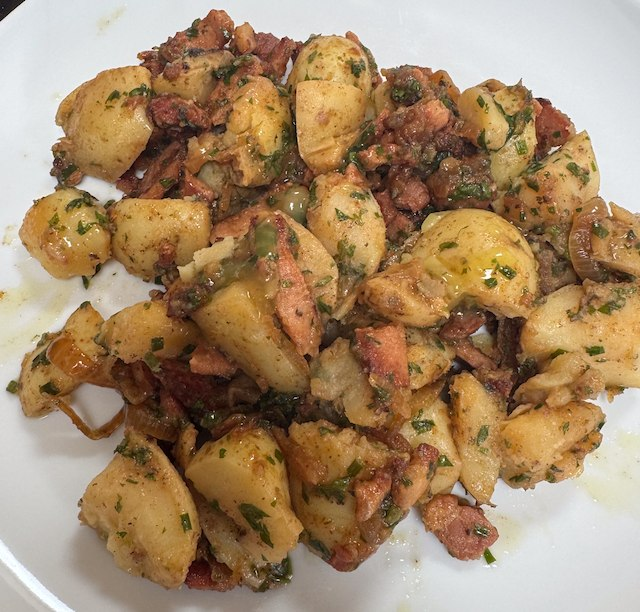

Potato and Bacon Salad

Serves: 4
Cook Time: 30 min
By Hugh Fearnley-Whittingstall in the Guardian 2010-05-01
Ingredients
- 1kg new potatoes, halved
- 12 rashers bacon, sliced
- 2 onions, sliced
- olive oil
- chives, chopped to 2 tbsp
- handful flat leaf parsley, chopped
- Dressing
- 3 tbsp olive oil
- 1 tbsp cider vinegar
- 1 tsp dijon mustard
- salt and pepper
Method
Boil the potatoes till tender, about 25 min. I use 1.5 litre water and 1 tbsp table salt.
Heat a frying pan to hot, add bacon and some olive oil. Turn heat to medium and fry bacon to crisp. Then turn heat to low, add onions and fry till translucent.
Whisk the dressing ingredients together.
Assemble. In a bowl, add potatoes, bacon mix, chives, parsley and mix. Add dressing and mix some more. Serve.